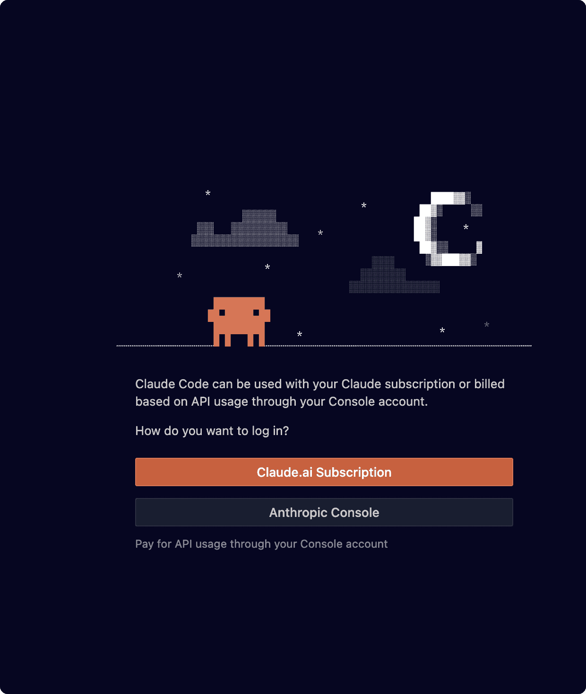

解决 Cursor / VSCode 第三方连接点问题

- Claude Code Install - Claude Code CLI 安装和环境变量配置完整指南
- 创建 ~/.claude/config.json 如果已经存在，直接编辑。
- 添加下面内容：(XXX可以不变，也可以改成你服务的名字或者你的API密钥)
{
"primaryApiKey":"xxx"
}- 重启 VSCode 和 Cursor 即可
以下为测试方案，如上一步已经成功可跳过。
使用 Claude Code CLI（推荐）
Claude Code CLI 是最灵活的方案，完全支持自定义 API 端点。
第一步：安装 Claude Code CLI
npm install -g @anthropic-ai/claude-code
claude --version第二步：配置环境变量
macOS / Linux：
编辑 ~/.zshrc 或 ~/.bashrc：
# 添加以下配置
export ANTHROPIC_AUTH_TOKEN="你的认证令牌"
export ANTHROPIC_BASE_URL="第三方连接点URL"刷新配置：
source ~/.zshrc # 或 source ~/.bashrcWindows：
使用 PowerShell（管理员权限）：
[System.Environment]::SetEnvironmentVariable('ANTHROPIC_AUTH_TOKEN', '你的认证令牌', 'User')
[System.Environment]::SetEnvironmentVariable('ANTHROPIC_BASE_URL', '第三方连接点URL', 'User')环境变量说明
ANTHROPIC_AUTH_TOKEN：你的 API 认证令牌（格式：你的API密钥）ANTHROPIC_BASE_URL：第三方连接点的完整 URL
第三步：验证配置
cd ~/your-project
claude 你好如果配置正确，Claude 应该能够正常响应。
日志和调试
启用详细日志以便排查问题：
# 启用 Claude Code CLI 详细日志
export DEBUG=claude:*
claude 你好
# 或使用 --verbose 标志
claude --verbose 你好相关资源
- Claude Code Install - CLI 安装完整指南
- Opcode 使用指南 - 桌面客户端使用
- Claude Code 完整使用指南 - 全面功能介绍
- Windows 环境变量设置 - Windows 配置详解
总结
解决 VSCode 和 Cursor 无法使用第三方连接点的问题，关键在于：
- ✅ 优先使用 Claude Code CLI，它提供最完整的自定义端点支持
- ✅ 正确配置环境变量，包括
ANTHROPIC_AUTH_TOKEN和ANTHROPIC_BASE_URL
如果你在配置过程中遇到问题，欢迎查看我们的其他教程或联系技术支持。